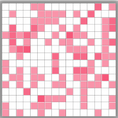

Path Finder Visualizer
View on Github
8 X 8
16 X 16
Fast
Average
Slow
Apply
New Grid
DFS Route
BFS Route
Tutorial
Welcome to PathFinder Visualizer
This short tutorial will walk you through all of the features of PathFinder.

1/6
Next
Previous
Skip Tutorial
Made with
♥
by Sahil